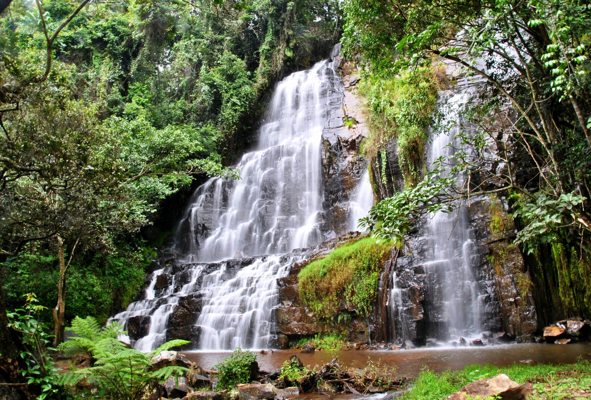

When Communities Get Involved in Preserving the Kibira National Park
Laury Iteka – May 20, 2025
The communities living near the 16 hills of the Musigati sector, bordering Kibira National Park, play a vital role in preserving this essential ecosystem. Their efforts are supported by local initiatives and partnerships with organizations such as the OBPE (Burundian Office for Environmental Protection) and the association "Conservation Communauté de Changement" (3C), in collaboration with the UNDP. This report was recently conducted by journalists from the AJEB (Association of Environmental Journalists).
Members of the association "Dukingire Ibidukikije" listening to instructions on how to better prepare tree nurseries
Following the physical demarcation of the Kibira National Park—a project aimed at establishing firebreaks, which are strips of bare land serving as natural barriers to separate the forest area from farmland—the 3C association, supported by the UNDP, has moved on to the stage of preparing nurseries. These nurseries will be used to propagate tree seedlings (both fruit and forest trees), which will be planted along the Mpogora River in Mpishi Hill and the Kirama and Nyamuzinga Rivers in Kanazi Hill, clearly marking the buffer zone.
Twelve Thousand Forest and Fruit Trees to Be Planted
Jean Marie Nzohabonayo, Executive Secretary of the 3C association and supervisor of these activities, stated that twelve thousand trees will be planted along the three rivers mentioned above to protect them and the homes of nearby communities.
According to him, 3C prefers involving the communities in these activities because they are the ones who will take care of the nurseries and the tree plantations, given their proximity. Nzohabonayo adds that these nurseries are currently being prepared in two locations: one in Kanazi Hill and the other in Ruce Hill. The types of trees to be planted include mesopsis, cedar, grevillea, avocado trees, and other fruit trees.
Former Destroyers Become Protectors
The president of the association "Dukingire Ibidukikije" notes that in the past, the communities engaged in harmful practices in the Kibira forest, such as illegal bamboo cutting for construction and the illegal exploitation of forest resources. Mr. Bucumi states that since becoming members of the association, people's mindsets have changed. "Now, association members—some of whom used to degrade the park—are being educated to preserve it, notably by planting trees in their own fields to meet their needs for firewood or construction materials, thus reducing the pressure on the park's resources."
Mr. Bucumi also explains that beyond protecting and preserving the Kibira, these activities provide income to meet their basic needs. "Every three weeks, we receive 60% of our wages, while the remaining 40% is saved within the association. This allows us to access small loans at low interest rates if needed," he explains.
Ecological and Economic Benefits of Preserving Kibira
Elie Nduwabike, an eco-guard in the Musigati sector, agrees with the local communities, affirming that their attitudes have shifted. Nowadays, they no longer enter the park for illegal activities. "There is no longer any conflict between the people and the eco-guards. We work together with the common goal of protecting and preserving the park."
Nduwabike points out that preserving the Kibira, a tropical forest, offers numerous ecological, economic, and social benefits. For him, preserving this forest means preserving biodiversity. Kibira is a natural habitat for many animal and plant species, some of which are endemic. It is also a vital source of genetic diversity crucial for ecosystem resilience. He further explains that Kibira helps regulate the climate. It plays a key role in carbon sequestration, helping to limit global warming. It also contributes to stabilizing the local climate (temperature, rainfall). "Protecting Kibira means preserving water quality by reducing erosion and sedimentation."
A Sense of Fulfillment for the Communities Near Kibira
A woman named Yollande, a member of "Dukingire Ibidukikije" association, says that thanks to the paid work, members now spend their time protecting Kibira rather than destroying it through hunting and farming to survive, or cutting trees for firewood. "We were informed about the consequences of destroying our park. We now understand that the more it is destroyed, the more negative effects we experience from deforestation. It stops raining. Animal and plant species gradually disappear," she adds.
Jeanine Ntirampeba, also a member of "Dukingire Ibidukikije," is pleased to earn a living through activities related to protecting the park. The members of this association, dedicated to preserving Kibira National Park, promise to redouble their efforts. They even plan to raise awareness among other residents so that everyone aligns with the mission of protecting the park.
Etienne Nyabenda, a local administrative official, affirms that the population is increasingly involved in protecting and preserving Kibira. He adds that the participation of nearby communities in income-generating activities supervised by the 3C association and the UNDP has positively impacted their daily lives.
It should be noted that a physical demarcation campaign for Kibira National Park was launched on November 26, 2024, across 16 hills in the Musigati sector, including Kanazi Hill.